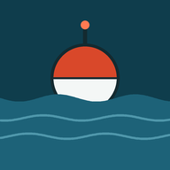

読み込み中…
文字の大きさ
このスマホだけの設定です。
データのバックアップ
記録はこのスマホの中だけに保存されています。機種変更の前などに書き出しておくと安心です。
表（CSV）で書き出す
Excel や Python（Jupyter）で分析できる表の形です。魚1行ずつに、日時・釣り場・潮・天気・水温などの条件が付きます。

画面下の （共有）→「ホーム画面に追加」→「追加」の順に押してください。次からはアイコンを押すだけで開けます。
下のボタンを押すと、ホーム画面にアイコンが追加されます。
このスマホだけの設定です。
記録はこのスマホの中だけに保存されています。機種変更の前などに書き出しておくと安心です。
Excel や Python（Jupyter）で分析できる表の形です。魚1行ずつに、日時・釣り場・潮・天気・水温などの条件が付きます。